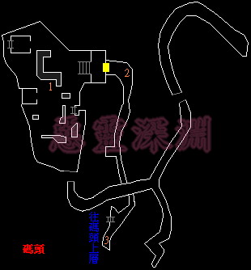
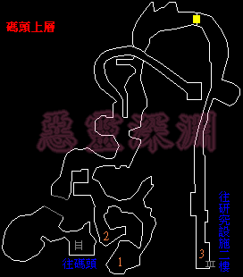
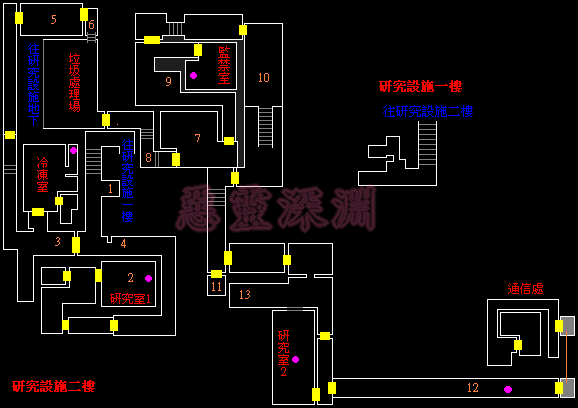
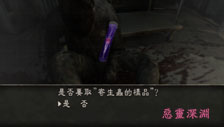
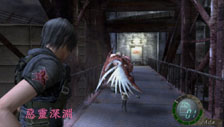

|
惡靈古堡～惡靈古堡４----Ada The Spy（Assignment Ada)
|
|
回收5個寄生體Sample 地圖上的紫色圓點●表示寄生體Sample的位置。 Ada the spy的任務中，沒有武器商人，也沒有小刀，初期可能會覺得彈藥拮据，可以多射擊敵人的頭部或腳部，再配合Ada的體技來 節省彈藥。在這個模式中，機關槍是很重要的武器，彈藥盡量不要浪費。
 遊戲開始於碼頭，前方正好就有幾個士兵供玩家練練技術。通道底部的道具記得去回收，有稀有的黃色藥草。 碼頭岸上理所當然有伏兵等著，可以先用狙擊槍將門口的兩個士兵打倒，再往前引發鍊炮兵。在此對付鍊炮兵建議可用手榴彈加上 機關槍射頭，但是附近還有很多小兵，打起來不是這麼容易，逃跑也是個不錯的選擇。逃跑時拿走編號1的綠色藥草， 還有編號2、 3處有黃色、紅色藥草，忙亂中別遺漏了。
 碼頭上層也有許多士兵，包括拿著炸藥和弓箭的士兵。在編號1只有手槍彈，反而是在編號2的地方有黃色藥草。 編號3有兩個持弓箭的士兵，後面也會有追兵追上，趕緊爬上梯子翻入研究設施二樓吧。
 翻入研究設施二樓來到編號1。研究設施一樓有個士兵，可以拿到機關槍彈，玩家自行選擇要不要下去。先前往研究室1，小手術室 中有黃色藥草，在編號2取得第一個寄生體Sample，取得後外面會衝入一批士兵，必要時趕緊用機關槍開路離開吧。
 往冷凍室拿取第二個寄生體Sample。回到走廊上的時候，多了許多持盾士兵和拿流星槌的士兵，玩家也有發現在編號3的紅色鋼瓶吧 ，建議先往編號4跑，用狙擊槍擊倒一個持盾士兵，然後從門的這一邊抓準時機引爆鋼瓶，或拉開距離，用狙擊槍解決這批敵人。 在編號5處看到下方有個鍊炮兵，玩家可以在這裡用狙擊槍攻擊一次，如果還待在原地，鍊炮兵和其他士兵就會跑上來找你了。玩 家自行決定要利用門來戰鬥，或是到編號6處待鍊炮兵跳上時先發制人。 下到垃圾處理場時，另外出現兩個持炸藥的士兵。附近的藥草別漏了。 到編號7時，士兵將前進的路關起了，重新打開後，出現了一批追兵，玩家可以給他們一顆手榴彈，或是先用機關槍開路，再退回 編號8來慢慢解決。 監禁室中有一批士兵，最裡側有第三個寄生體Sample。編號9有黃色藥草。 前進至編號10時，另有一批士兵，當玩家想要繼續前進時，門卻被鎖上了，樓梯上頭出現一批持盾士兵及鍊炮兵。接近後用手榴彈 攻擊吧！切記要靠近一點並往上攻擊。
編號11的小房間有兩個火藥士兵，玩家接近時門就會打開，在他們拋出炸藥前射擊阻止，門關上後他們就自爆了。小房間裡有黃色 藥草。 研究室2有第四個寄生體Sample，還有大量的彈藥、藥草補給，建議先不要拿取寄生體Sample，因為等會就要與Krauser決鬥，為了攜 帶更多的道具，寄生體Sample可以待會再拿。拿取需要的道具，建議攜帶手榴彈、大量機關槍彈or狙擊槍彈、恢復藥。往編號12橋 上。 只要玩家接近升降梯時，就會引發Krauser出現，引發他出現前，先將藏有道具的木桶射破，內有急救噴霧、手槍彈、機關槍彈，這 樣需要補給時會比較方便。裝備手榴彈，以倒退的方式引發Krauser出現，一出現，就往較近的地上拋出，如此一來，一開始就可以 讓Krauser跪下，要用狙擊槍或是機關槍任由玩家選擇。
 當Krauser往後翻拉開距離時，就是拋出手榴彈的好時機，只要擊中，Krauser就會跪下。Krauser朝玩家逼近時，就讓Ada後退好讓 Krauser的攻擊落空，產生空隙，趕緊用機關槍連射。當玩家背後已經沒空間時 ，從他身邊跑過再轉身重來。注意，Krauser的攻擊力 極高，在和他戰鬥時應以迴避攻擊為主，攻擊為次，一些只要後退就可以避開的攻擊則不需閃躲，應該趕緊舉槍攻擊（例如迴旋 踢）。 給予Krauser一定攻擊後，他會拋閃光彈脫身，並留下第五個寄生體Sample，此時升降梯也到了。 回研究室2先補充道具，拿第四個寄生體Sample，拿取之後門被鎖住， 到編號13打開，小心又多出了很多持盾士兵和持流星槌的士 兵，利用編號13的紅色鋼瓶，放心用掉所有的彈藥來攻擊吧。 五個寄生體Sample都到手後，到通信處調查通信設備，此遊戲就結束了。
未經許可禁止轉載連結 |
惡靈深淵Biohazard Abyss http://98.to/coolbio